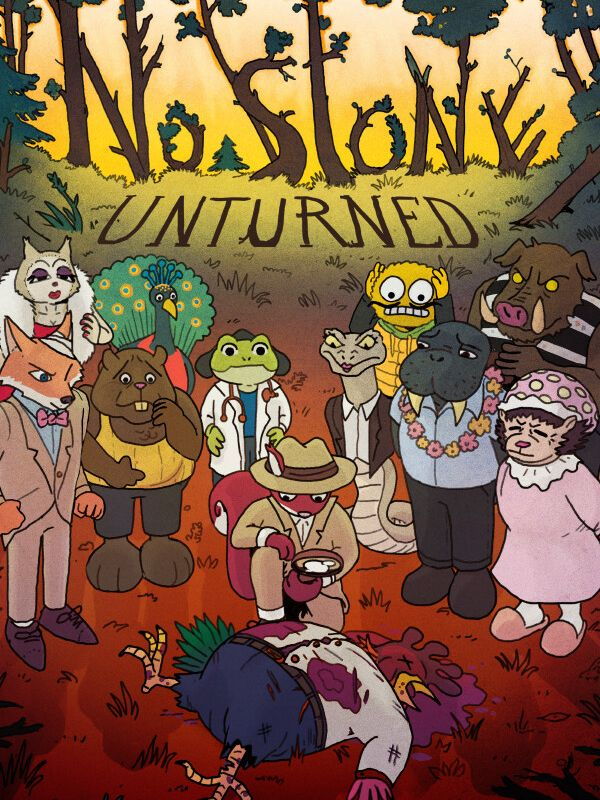

No Stone Unturned
No Stone Unturned
Details
 |
|
| Playtime | Not Played |
| Last Activity | Never |
| Added | 2026-04-13 16:48:30 |
| Modified | 2026-04-13 16:48:53 |
| Completion Status | Not Played |
| Library | Steam |
| Source | Steam |
| Platform | PC (Windows) |
| Release Date | 2026-09-30 |
| Community Score | |
| Critic Score | |
| User Score | |
| Genre | Adventure Indie Puzzle Role-playing (RPG) |
| Developer | Wise Monkey Entertainment |
| Publisher | |
| Feature | Single Player |
| Links | Steam YouTube Discord Twitch Official Website |
| Tag | 2D Action RPG Action-Adventure Adventure Choices Matter Comedy Detective Exploration Funny Interactive Fiction Investigation Multiple Endings Mystery Noir Open World Pixel Graphics Puzzle Simulation Story Rich Top-Down |
Description
Hello There Detectives...
I'd give you a long convoluted backstory... but it's simple. We got a Murder Mystery on our hands, and one question:

What was he running from? Who, or what, stopped him? Did the chicken really come before the egg? If so... How?!
Okay, maybe there's more than one question... But Detective Cox needs answers like a walrus needs a vacation (a lot)
And he needs YOUR help!
Solve 'A Murder Most Fowl' and 5 more Classic Cases!
Learn why The Hare and the Tortoise are at each other's throats, what's got the Cat's tongue, and hoo tried to silence the watchful giant owl...? (Ya know... Hoo. Like an owl) all based on fairy tales or children's stories with a delightfully dark twist!

Stepping into the well-worn shoes of Detective Cox, a soft-boiled amnesiac squirrel, get to the bottom of this murder the only way you know how — through a series of seemingly pointless yet surprisingly fun mini-games!
A HUGE Variety of Nostalgic Mini-Games!

Armed with your trusty Detective Essentials (a magnifying glass, tape recorder and crowbar - just in case), solve puzzles, analyse crime scenes, interrogate townsfolk and unturn stones to solve six gruesome crimes. Come to think of it, that’s a worrying number of crimes for one small village… Are you sure you’re up to the task?...

Broaden your horizons (and the literal map) by repairing bridges, buildings and other broken... things... for this village on the brink of ruin, completing item bundles to unlock new areas and uncover essential clues. I’m sure the answer to all of your problems lies just behind that fallen log… It must be so DAM good.

Search Suspect Homes to Find Clues... At Your Own Risk...

DRAW to Conclusions as you Find Key Pieces of Evidence!
Help Detective Cox piece together the mystery of Orchard Under Hill by completing a wide variety of familiar mini-games that not only help you solve the mysteries in town, but also act as payoffs for their own punchlines!


Crack the Case Wide Open Like an Egg! A CHICKEN EGG?! It's all adding up...
Detective Cox is set on becoming the Greatest Detective in the World! Help him search for clues, solve puzzles, and learn about this story-rich world of troubled animals as they all try to survive in a civilisation on the brink of crisis. Speaking of troubled animals...


Something big is happening to this little village... Can you save the entire world before it's too late? The Giant Wise Monkey in your dreams certainly seems to think so!

Support the Game! Wishlist and Follow! (It helps our small team much more than you think!)
Don’t let this case go cold — support No Stone Unturned by Wishlisting/Following here or by Late-Pledging on our successful Kickstarter campaign from last year to receive exclusive rewards in return, including the first No Stone Unturned comic book! Just search for ‘No Stone Unturned’ on Kickstarter and follow the Orange Squirrel!